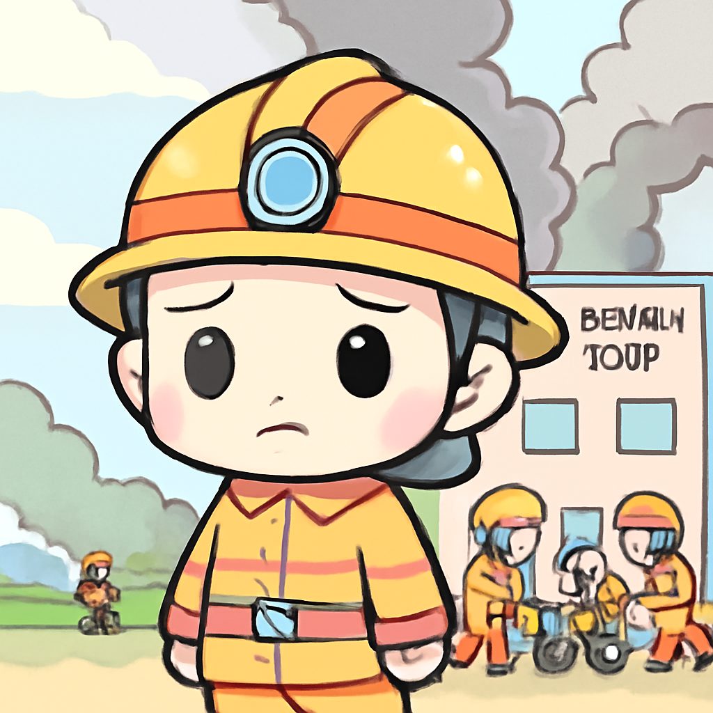

其一 · 沙烏地阿拉伯 · 油管因無人機攻擊關閉
沙烏地阿拉伯關閉重要油管，源於伊拉克的無人機攻擊。
沙烏地阿拉伯因無人機攻擊於近期關閉了其東西油管，這條油管對於應對伊朗在波斯灣的封鎖至關重要。這起事件引發了對中東地區油價及供應鏈安全的擔憂，未來可能影響全球油市的穩定性。看來無人機不僅能送外賣，還能送麻煩！
🔗 原始新聞 ↗
2026-09-13 · 以古觀今，以笑抗愁
沙烏地阿拉伯關閉重要油管，源於伊拉克的無人機攻擊。
沙烏地阿拉伯因無人機攻擊於近期關閉了其東西油管，這條油管對於應對伊朗在波斯灣的封鎖至關重要。這起事件引發了對中東地區油價及供應鏈安全的擔憂，未來可能影響全球油市的穩定性。看來無人機不僅能送外賣，還能送麻煩！
🔗 原始新聞 ↗
烏克蘭面臨自戰爭以來最艱難的冬季。
根據聯合國官員的報導，烏克蘭即將面對自全面侵略以來的最艱難冬季。冬季即將來臨，供電和供水問題迫在眉睫，許多民眾正為寒冷的日子做準備。希望這個冬天不會成為“冰封的戰鬥”！
🔗 原始新聞 ↗
菲律賓渡輪火災造成76人遇難，仍有失踪者。
在菲律賓，一艘渡輪的火災造成76人遇難，救援行動仍在進行中，因為毒煙和高溫使得尋找失踪者變得困難。這起事件讓人對海上安全的警覺再次提高，大家出海前是不是該再檢查一下救生衣了？
🔗 原始新聞 ↗
法國調查火車出軌是否為惡意行為。
法國當局正在調查一宗火車出軌事件，事故中有44人受傷，現場發現了一些鐵軌碎片，懷疑可能是惡意行為。這起事件不僅影響了當地交通，也讓人重新關注公共安全問題。真希望火車只是偶爾“出軌”，而不是經常！
🔗 原始新聞 ↗
智利護理之家發生火災，16名居民不幸遇難。

智利的一家護理之家發生火災，造成16名居民遇難，當地政府正在調查事故原因。這起悲劇再次提醒我們，老年人的安全是社會不可忽視的重要責任。希望以後能有更好的安全措施，讓悲劇不再重演。
🔗 原始新聞 ↗